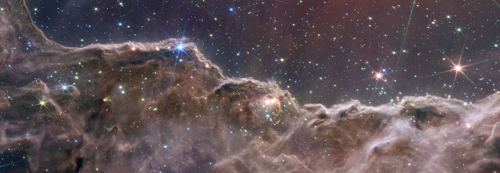
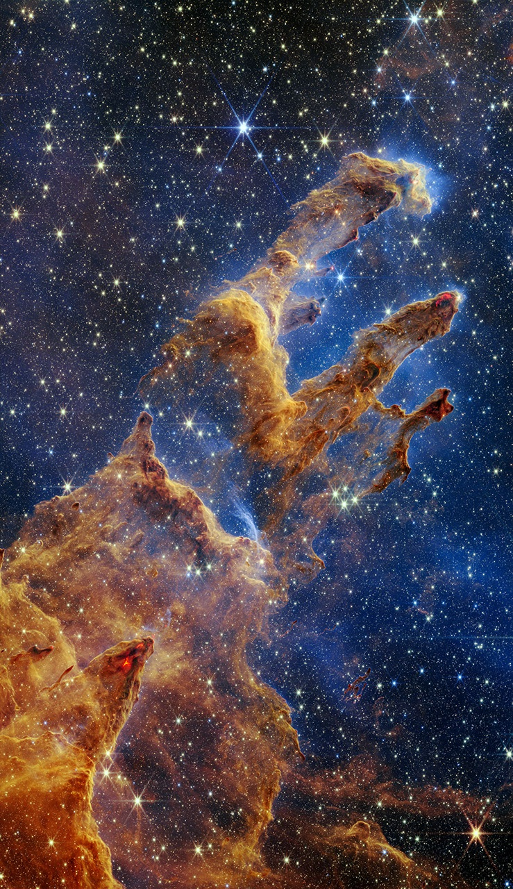

LOSE YOURSELF IN THE LIGHT
An ocean of colour. A thousand possible suns.
THE REAL UNIVERSE IS EVEN STRANGER
Webb observes infrared light. These images map it into colours we can see. Our voyage is an artistic interpretation, not a scan of these places.

